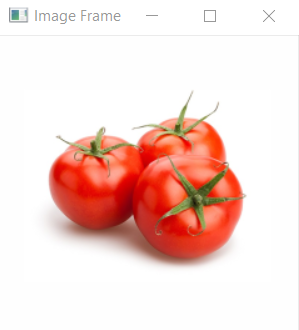
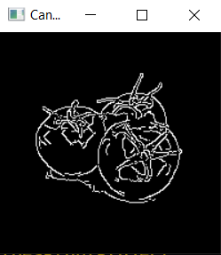

Canny Edge Detection
OpenCV puts all the above in single function, cv.Canny(). We will see how to use it. First argument is our input image. Second and third arguments are our minVal and maxVal respectively. Fourth argument is aperture_size. It is the size of Sobel kernel used for find image gradients. By default it is 3.Last argument is L2gradient which specifies the equation for finding gradient magnitude. If it is True, it uses the equation mentioned above which is more accurate, otherwise it uses this function: Edge_Gradient(G)=|Gx|+|Gy|. By default, it is False.
It consist of 4 major steps:
- Reduce Noise using Gaussian Smoothing.
- Compute image gradient using Sobel filter.
- Apply Non-Max Suppression or NMS to just jeep the local maxima
- Finally, apply Hysteresis thresholding which that 2 threshold values T_upper and T_lower which is used in the Canny() function.
Sample Image
Code
1 2 3 4 5 6 7 8 9 10 11 | import cv2 import numpy as np from matplotlib import pyplot as plt img = cv2.imread("tomatoes.jpg") img = cv2.cvtColor(img, cv2.COLOR_BGR2RGB) canny = cv2.Canny(img, 100, 200) cv2.imshow("Canny Edge", canny) cv2.waitKey(0) cv2.destroyAllWindows() |
Output
Test the code with your own images
Completed Successfully.